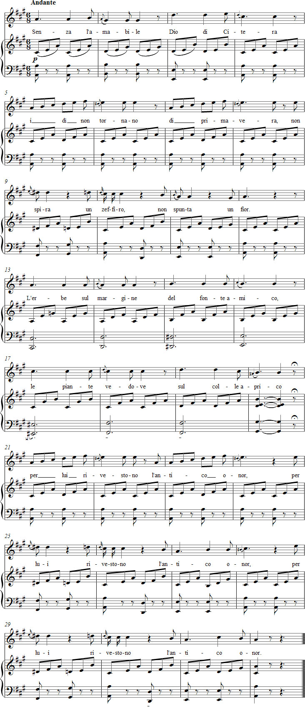

Vaccaj: Exercise 8a
Listen to the recording
Sheet music

Lyrics
Le appoggiature (sopra e sotto)
Appoggiaturas (high and low)
god of Cythera (Aphrodite), the days of spring
will not return, the west wind will not blow,
and flowers will not blossom.
The herbs by the well
and the bare trees on the sunny hill
will gratefully dress up for him
in their new garments of the old splendour.
Performance instructions
The subject of this exercise is the long appoggiatura, which Vaccaj considers the foremost ornament in the art of singing. This also begins a series of six exercises in Metodo pratico devoted to different ornaments, including the appoggiatura, mordent, turn and trill.
Appoggiare means to support, sustain or lean upon. The long appoggiatura thus supports its principal note, but also emphasises and strengthens it because it is always accented. It is therefore generally placed on stressed beats. The appoggiatura preceding the principal note helps connect that note to the melody with legato. Some consider appoggiaturas from below to have a weaker accent than those from above.
The gentle atmosphere of the poem Senza amabile may have prompted Vaccaj to choose it for an exercise in which the long appoggiatura often lends a "pleading" character.
Practice suggestions
This is an excellent legato exercise, in which the preceding vowel gives energy to the next one, provided that the tempo does not become too slow and the n sound is not overemphasised in senza, spunta, fonte, piante, antico and onor.
A flawless appoggiatura also requires flexible breath control. Adjust the breath pressure so that ascending passages do not automatically become a crescendo.
The note following the appoggiatura, that is, the principal note, must be unaccented. Pay particular attention to bars 24 and 28.
Ideas for interpretation
The song must not sound mechanical or dry. You can counteract this by improvising the long appoggiaturas. The aim, however, is to communicate the meaning of important syllables and words.
Normally unstressed prepositions and articles, such as senza, i, di, del, le, sul and per, fall at the beginning of a bar but should not be accented if the prosody of the poem is respected. Give them the same lightness as the word per in bars 24 and 28.
If you imagine the song in 12/8 time and let it begin on the third beat of the bar, the correct stress patterns emerge naturally.
As a useful starting point, write each of the poem’s two stanzas on three lines instead of six. This also makes the rhyme scheme clear.
Vary the articulation and dynamics in the final six phrases. The listener should be able to hear from the phrasing that the song is based on a two-stanza poem in which each phrase expresses a coherent thought.
For your interpretation, draw inspiration from the radiance and joy of anticipating spring.
Forshufvud, G. 1994. Con lieve fiato. Lärarhandledning till Nicola Vaccajs Metodo pratico. Göteborgs universitetet.